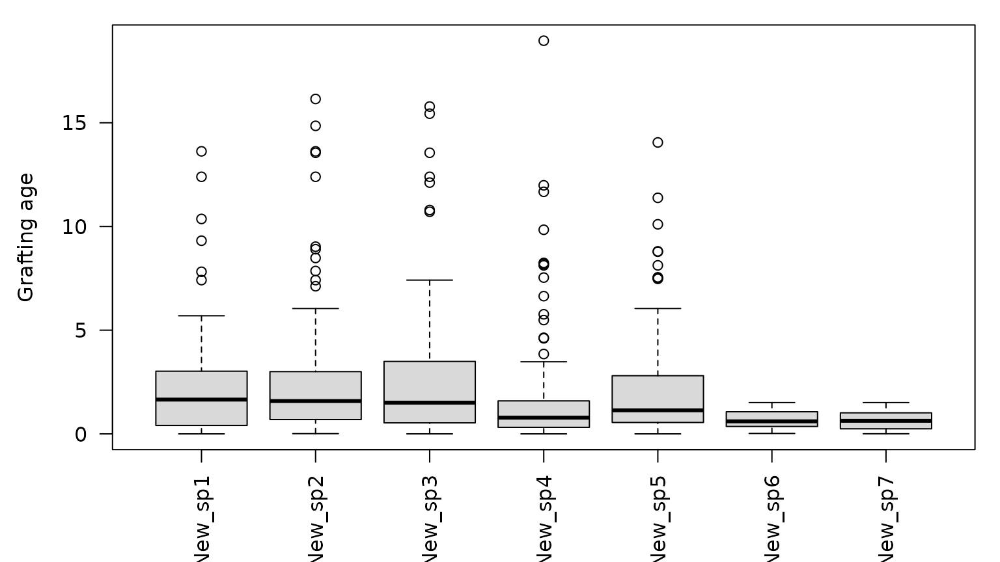
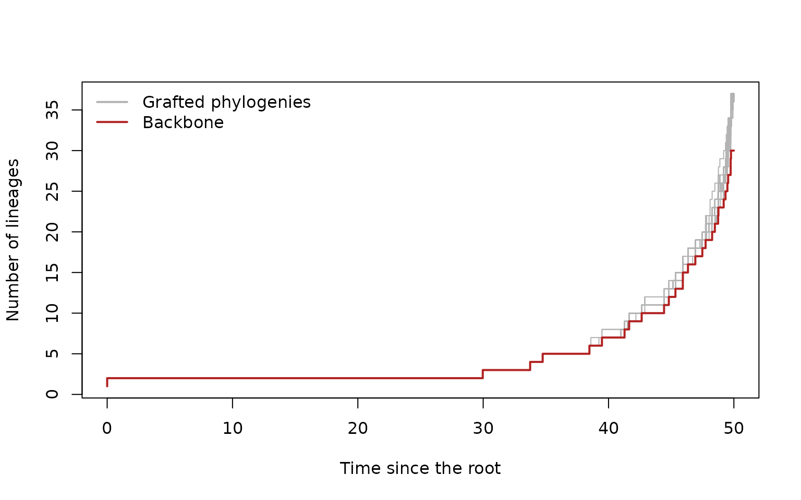
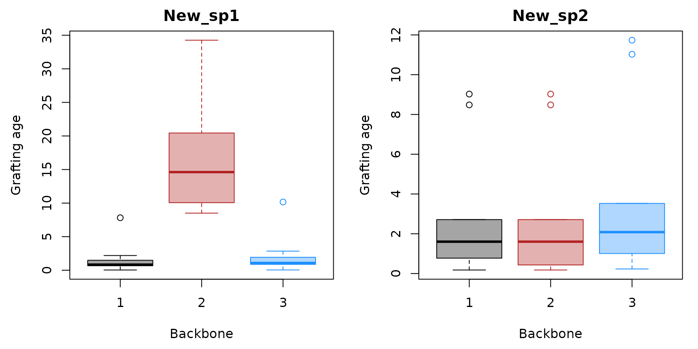
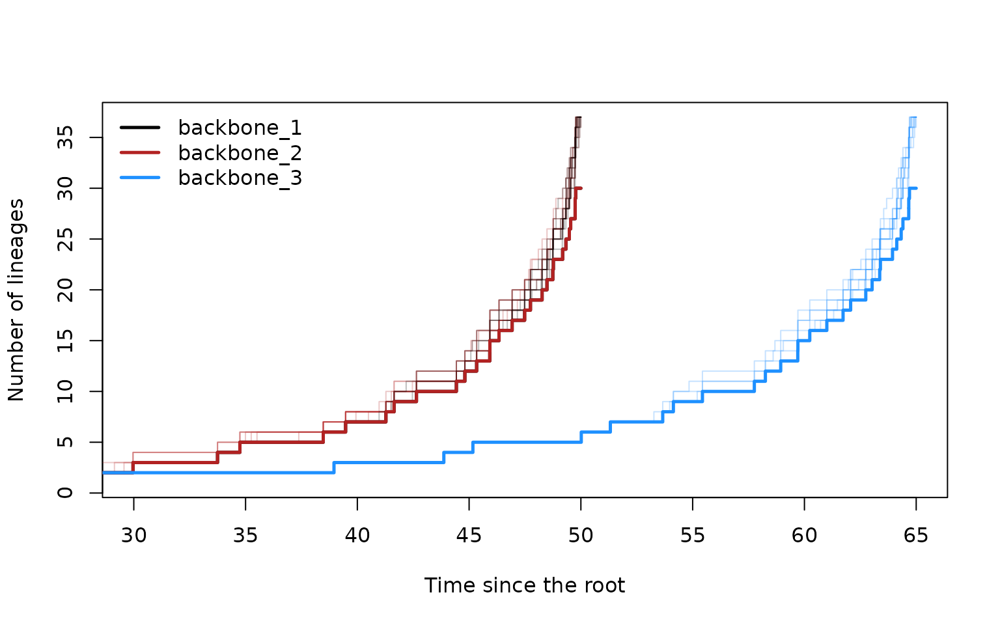

Handle uncertainty: simulations, stochastic maps and backbones
Maël Doré
2026-11-27
Source:vignettes/handle_uncertainty.Rmd
handle_uncertainty.RmdA grafted phylogeny is one realization of a stochastic process, conditioned on the information you provide. It can be used for your main analyses, but ideally you would like to accoutn for potential sources of uncertainty in order to assess the robustness of your results. This tutorial explains how to account for different sources of uncertainty with phylograftR, and how to handle the resulting sets of grafted phylogenies in downstream analyses.
Here, we cover:
- N simulations: the uncertainty in the stochasticity of the grafting process itself.
- P stochastic maps: the uncertainty in the evolution of the traits used as constraints.
- P x N: how the stochastic maps and the simulations are crossed to produce grafted phylogenies that account for both sources of uncertainty mentioned above.
- How to flatten the outputs with
flatten_grafted_phylogenies()to use them in downstream analyses. - Summary the format and the naming system of the outputs.
- Loop over several backbones to account for the uncertainty in the backbone phylogeny (topology + divergence dating).
The principle is the same whatever the type of
attribute used as constraint: categorical traits, biogeographic
ranges, and continuous traits (once discretized into states). To learn
how to build the stochastic maps from your own tip data, see
vignette("prepare_stochastic_maps").
This tutorial is also about reproducibility. The
grafting is stochastic, so phylograftR relies on a seed
system: a single seed makes a whole run
reproducible (all the simulations and all the maps), and each
grafted phylogeny can be reproduced alone from its own seed
(and its map). We explain how the seeds work in Section 1
(simulations), Section 3 (maps and simulations crossed), and
Section 6 (several backbones), and what it implies for the
analyses.
0/ Data
We use the toy backbone, the toy list of 7 missing
taxa, and the toy multiSimmap of
10 stochastic maps of a color with three states. 10 maps are enough for
illustration, but real analyses should use 100 maps or
more to properly account for the uncertainty in trait
evolution.
# ------ Toy data ------ #
data(toy_backbone)
data(toy_missing_taxa_list) # Taxonomic constraints only (target clades and excluded subclades)
data(toy_missing_taxa_list_with_allowed_states) # Same, with colors allowed for some taxa
data(toy_multiSimmap) # 10 stochastic maps of the color
# Missing taxa list with the colors allowed for some taxa
taxa_colors <- toy_missing_taxa_list_with_allowed_states
# New_sp1 is only allowed in "red" in the shipped list. We also allow "green", so that a branch
# is available for it in each of the 10 maps (see the end of Section 2 for what happens otherwise)
taxa_colors$allowed_states[["New_sp1"]] <- c("red", "green")To show the variability among grafted phylogenies, we use
extract_grafting_info(). This function is used a
posteriori to returns a summary table with one row per
grafted taxon and per grafted phylogeny, with the age
of the grafting and the branch
(parent_node) on which the taxon was grafted (see
vignette("check_grafting")).
1/ N simulations: stochasticity of the grafting
Even with the same backbone and the same constraints, two
runs of the grafting function with different seeds give different
phylogenies. With the default method
("BD_clades"), the divergence ages are drawn at
random from the distributions expected under the birth-death
model fit on each target clade, and the branch is drawn at
random among the branches available at this age. For the
"uniform" method, there is no diversification model
involved, but the location of the graft is still drawn at
random from a uniform distribution among all avaialble
branches. A single grafted phylogeny is thus one possible
outcome among many.
nb_simulations runs the grafting N
times from the same inputs, producing N different
outcomes. A unique seed makes the run
reproducible. It controls the series of seeds used to produce each of
the outcomes.
# ------ N simulations ------ #
# Graft the missing taxa 100 times, with taxonomic constraints only (no stochastic map)
grafted_sims <- graft_missing_taxa(phy = toy_backbone, missing_taxa_list = toy_missing_taxa_list,
nb_simulations = 100, verbose = FALSE, seed = 1)
# The output is a multiPhylo with one phylogeny per simulation
class(grafted_sims)
#> [1] "multiPhylo"
length(grafted_sims)
#> [1] 100
head(names(grafted_sims))
#> [1] "sim_1" "sim_2" "sim_3" "sim_4" "sim_5" "sim_6"
# The seed of each simulation is stored in the attribute "seeds"
head(attr(grafted_sims, "seeds"))
#> sim_1 sim_2 sim_3 sim_4 sim_5 sim_6
#> 1 1140350788 312928385 866248189 1909893419 554504146The grafting of each taxon varies across the
simulations: the ages and the
branches differ. We use
extract_grafting_info() to summarize the
branch (parent_node) on which the taxon
was grafted and the age of the grafting across
simulations.
# ------ Variability of the grafting among simulations ------ #
info_sims <- extract_grafting_info(grafted_sims, missing_taxa_list = toy_missing_taxa_list,
phy_backbone = toy_backbone)
# Summarize the number of different branches used for each taxon, and their median grafting age
data.frame(N_simulations = tapply(info_sims$simulation, info_sims$Taxon_name, length),
N_parent_branches = tapply(info_sims$parent_node, info_sims$Taxon_name, function (x) length(unique(x))),
Graft_age_median = round(tapply(info_sims$graft_age, info_sims$Taxon_name, median), 2))
#> N_simulations N_parent_branches Graft_age_median
#> New_sp1 100 7 1.65
#> New_sp2 100 18 1.58
#> New_sp3 100 28 1.51
#> New_sp4 100 21 0.78
#> New_sp5 100 11 1.14
#> New_sp6 100 1 0.61
#> New_sp7 100 4 0.63
# Distribution of the grafting ages
par(mar = c(4.5, 4.5, 1, 1))
boxplot(graft_age ~ Taxon_name, data = info_sims, ylab = "Grafting age", xlab = "",
las = 2, col = "grey85")
The more constrained a taxon is (e.g., a younger and
smaller target clade like New_sp6 and
New_sp7), the less it varies. Downstream
analyses performed over the 100 grafted phylogenies are more
robust than the results obtained from a single phylogeny.
Ensure reproducibility across simulations
phylograftR is design to ensure full
reproducibility of analyses based on the use of
seed controlling the random number generation. The
first simulation in a grafting run uses the value in
seed, and the seeds of the other simulations of
the run are all derived from it. Each simulation can therefore be
reproduced alone with its own seed, and the whole set
of simulations can be reproduced with the unique seed
too:
# ------ Reproduce one simulation ------ #
# Rerun the simulation 3 alone, with its seed
seed_3 <- attr(grafted_sims, "seeds")["sim_3"]
sim_3_alone <- graft_missing_taxa(phy = toy_backbone, missing_taxa_list = toy_missing_taxa_list,
nb_simulations = 1, verbose = FALSE, seed = seed_3)
# Same grafted phylogeny
all.equal(sim_3_alone$edge, grafted_sims[["sim_3"]]$edge)
#> [1] TRUE
all.equal(sim_3_alone$edge.length, grafted_sims[["sim_3"]]$edge.length)
#> [1] TRUEIf some simulations fail because of the random draws (e.g., no usable
age after many redraws), they are skipped with a warning, and listed in
the attribute "failed". Use
force_simulations = TRUE (the default is
FALSE) to try new seeds until nb_simulations
phylogenies are obtained (see ?graft_missing_taxa).
2/ P maps: uncertainty in the trait evolution
When the grafting is constrained by a trait or by
biogeographic ranges, the evolutionary history
of this attribute along the backbone is itself uncertain:
ancestral states are inferred using models, not observed. A
stochastic map (simmap) is only
one possible history. A set of stochastic
maps of the same trait (a
multiSimmap) describes the uncertainty in
its evolutionary history, and each map can be used as a different
constraint for the grafting (see also Section 3 in
vignette("prepare_stochastic_maps")).
The multiSimmap is provided to the same argument
simmap. The grafting is run with each of the P
maps, so the uncertainty in the trait history is
propagated to the grafted phylogenies.
# ------ P maps ------ #
# Graft with each of the 10 maps (one simulation per map by default)
grafted_maps <- graft_missing_taxa(phy = toy_backbone, missing_taxa_list = taxa_colors,
simmap = toy_multiSimmap, verbose = FALSE, seed = 1)
# The output is a list with one grafted phylogeny per map, named after the maps
class(grafted_maps)
#> [1] "list"
names(grafted_maps)
#> [1] "map_1" "map_2" "map_3" "map_4" "map_5" "map_6" "map_7" "map_8"
#> [9] "map_9" "map_10"
class(grafted_maps$map_1)
#> [1] "phylo"The maps differ in the branches in the allowed states, so the constraints applied when grafting differ, and a taxon is not grafted in the same location from one map to the next:
# ------ Variability of the grafting among maps ------ #
info_maps <- extract_grafting_info(grafted_maps, missing_taxa_list = taxa_colors,
phy_backbone = toy_backbone)
# Number of different branches used for each taxon across the 10 maps
tapply(info_maps$parent_node, info_maps$Taxon_name, function (x) length(unique(x)))
#> New_sp1 New_sp2 New_sp3 New_sp4 New_sp5 New_sp6 New_sp7
#> 1 4 2 4 2 1 2The variability depends on the taxon: it is higher for the taxa whose allowed states, and thus the available branches, change more among the maps.
Each grafted phylogeny comes with its updated simmap
($simmap), derived from the map it was grafted on. The same
applies to several traits: provide a list of
multiSimmaps with the same number of maps for each
trait, and the maps are paired (see
vignette("multiple_traits")). Each grafted phylogeny then
has one updated simmap per trait.
This works for all the types of attributes.
Biogeographic stochastic maps (multiSimmap of ranges, see
vignette("biogeographic_data")) and the maps discretized
from continuous stochastic maps
(vignette("continuous_data")) are multiSimmaps
too, and are used in the same way.
What happens when a map cannot be used?
A map can fail for two reasons, which are handled differently:
1/ Random failure
A taxon can be grafted in a map, but the draws of its divergence age
did not give a usable age after max_age_redraws attempts
(see vignette("graft_missing_taxa")). In this case, the map
is dropped from the output with a warning, while the
other maps are returned, and the dropped map is listed in the attribute
"failed_maps".
We illustrate it by allowing very few redraws:
# ------ A map dropped at random ------ #
# Only 3 attempts to draw a usable divergence age
grafted_dropped <- graft_missing_taxa(phy = toy_backbone, missing_taxa_list = taxa_colors,
simmap = toy_multiSimmap, max_age_redraws = 3,
verbose = FALSE, seed = 1)
#> Warning: Map 'map_7': none of the 1 simulation(s) could be obtained, the map is dropped from the output.
#> Reasons:
#> - No usable divergence age was found for 1 taxa of the target clade defined by t26, t18 after 3 redraws of their divergence ages ('max_age_redraws').
#> Time window of the divergence ages: from age 0 to age 50 (stem age of the target clade).
#> Share of this window crossed by the available branches in the allowed states (current tree):
#> - New_sp1: 46.72% (allowed states: red, green)
#> No available branch crosses the ages drawn: the part of the time window where branches are available is too narrow or too far from the ages expected from the diversification model.
#> Increase 'max_age_redraws', extend the allowed states, or use method = 'uniform'.
# An output is produced, without the map(s) that failed
names(grafted_dropped)
#> [1] "map_1" "map_2" "map_3" "map_4" "map_5" "map_6" "map_8" "map_9"
#> [9] "map_10"
attr(grafted_dropped, "failed_maps")$map
#> [1] "map_7"With more maps or simulations, force_simulations = TRUE
tries new seeds until the requested number of phylogenies is obtained,
so that fewer maps are dropped. With the default
max_age_redraws = 1000, such random failures are rare,
except for very narrow windows of grafting.
2/ Hard constraints that cannot be met
A taxon cannot be grafted in a map because its constraints (i.e., target clade, excluded subclades, allowed states) leaves no available branch pieces for grafting. In this case, the run stops with an error.
To illustrate this, we now use the original list, where
New_sp1 is only allowed in "red":
# ------ A map where the constraints cannot be met ------ #
# Colors allowed for New_sp1 in the shipped list
toy_missing_taxa_list_with_allowed_states$allowed_states[["New_sp1"]]
#> [1] "red"
# Graft with each of the 10 maps
graft_missing_taxa(phy = toy_backbone, missing_taxa_list = toy_missing_taxa_list_with_allowed_states,
simmap = toy_multiSimmap, verbose = FALSE, seed = 1)
#> Error:
#> ! Map 'map_3': 1 taxa have no branch available for grafting in their allowed states: none of the available branches of their target clade has a piece in these states.
#> - New_sp1 (target clade tips: t26, t18; allowed states: red)
#> Adjust 'allowed_states' (global or in missing_taxa_list), or the constraints on the branches ('include_target_clade_stem', 'Excluded_subclades', 'exclude_subclades_stem') for these taxa.The grafting stops with an error that names the map:
in the map 3, no branch of the target clade of
New_sp1 has a piece in red. Since the problem is
in the inputs, the whole run is stopped instead of silently skipping the
map. check_grafting_plan() finds such maps
before the run (see
vignette("check_grafting")):
# ------ Check the grafting plan across the maps ------ #
plan_maps <- check_grafting_plan(phy = toy_backbone,
missing_taxa_list = toy_missing_taxa_list_with_allowed_states,
simmap = toy_multiSimmap, verbose = FALSE)
# Number of maps where each taxon cannot be grafted
plan_maps[, c("Taxon_name", "allowed_states", "n_maps_infeasible")]
#> Taxon_name allowed_states n_maps_infeasible
#> 1 New_sp1 red 1
#> 2 New_sp2 blue, green, red 0
#> 3 New_sp3 blue, green, red 0
#> 4 New_sp4 blue, green 0
#> 5 New_sp5 green 0
#> 6 New_sp6 blue, green, red 0
#> 7 New_sp7 blue, red 0
# Which maps?
per_map <- attr(plan_maps, "per_map")
per_map[!per_map$feasible, c("map", "Taxon_name", "cause")]
#> map Taxon_name cause
#> 15 map_3 New_sp1 allowed_statesTo solve it, relax the constraints of the taxon (as we did in Section 0), remove the maps that cannot be used, or change the other constraints of the taxon (e.g., its target clade or its excluded subclades).
3/ P x N: crossing maps and simulations
The two sources of uncertainty are independent: a
given stochastic map still leaves room for the stochasticity of the
grafting. Therefore, both sources can be combined: each map is used for
nb_simulations simulations, so P maps give
P * nb_simulations grafted
phylogenies.
# ------ P x N ------ #
# Graft with each of the 10 maps, 5 simulations per map: 50 grafted phylogenies
grafted_crossed <- graft_missing_taxa(phy = toy_backbone, missing_taxa_list = taxa_colors,
simmap = toy_multiSimmap, nb_simulations = 5,
verbose = FALSE, seed = 1)
# One element per map, each a multiPhylo with the 5 simulations of this map
length(grafted_crossed)
#> [1] 10
sapply(grafted_crossed, length)
#> map_1 map_2 map_3 map_4 map_5 map_6 map_7 map_8 map_9 map_10
#> 5 5 5 5 5 5 5 5 5 5
# Total number of grafted phylogenies
sum(sapply(grafted_crossed, length))
#> [1] 50
# Names of the phylogenies in the first map: "<map>_sim_<k>"
names(grafted_crossed$map_1)
#> [1] "map_1_sim_1" "map_1_sim_2" "map_1_sim_3" "map_1_sim_4" "map_1_sim_5"The seeds of the simulations are the same in each
map (the simulation 1 of each map uses seed, the
simulation 2 of each map uses the second seed, etc.). Each phylogeny can
be reproduced alone from its map (as a single
simmap) and its seed, which is stored in the attribute
"seeds" of the map:
# ------ Reproduce one phylogeny of the crossed output ------ #
# Seed of the simulation 2 of the map 3
seed_map_3_sim_2 <- attr(grafted_crossed$map_3, "seeds")["map_3_sim_2"]
seed_map_3_sim_2
#> map_3_sim_2
#> 1140350788
# Graft again with the map 3 alone (a single simmap) and this seed
map_3_sim_2_alone <- graft_missing_taxa(phy = toy_backbone, missing_taxa_list = taxa_colors,
simmap = toy_multiSimmap[[3]], nb_simulations = 1,
verbose = FALSE, seed = seed_map_3_sim_2)
# Same grafted phylogeny
all.equal(map_3_sim_2_alone$edge, grafted_crossed$map_3[["map_3_sim_2"]]$edge)
#> [1] TRUE
all.equal(map_3_sim_2_alone$edge.length, grafted_crossed$map_3[["map_3_sim_2"]]$edge.length)
#> [1] TRUEWe can compare how much of the variation among grafted phylogenies is due to the maps or due to the simulations, with the grafting ages:
# ------ Variation among maps and within maps ------ #
info_crossed <- extract_grafting_info(grafted_crossed, missing_taxa_list = taxa_colors,
phy_backbone = toy_backbone)
# For each taxon: standard deviation of the grafting age among simulations of the same map (within),
# and standard deviation of the mean grafting age of the maps (between)
sd_within <- tapply(info_crossed$graft_age, info_crossed$Taxon_name, function (x) NA)
for (taxon in names(sd_within))
{
ages <- info_crossed[info_crossed$Taxon_name == taxon, ]
sd_within[taxon] <- sqrt(mean(tapply(ages$graft_age, ages$map, var)))
}
sd_between <- tapply(info_crossed$graft_age, list(info_crossed$Taxon_name, info_crossed$map), mean)
data.frame(SD_within_maps = round(sd_within, 2), SD_between_maps = round(apply(sd_between, 1, sd), 2))
#> SD_within_maps SD_between_maps
#> New_sp1 1.65 0.80
#> New_sp2 4.22 0.70
#> New_sp3 1.79 0.05
#> New_sp4 0.46 0.17
#> New_sp5 1.76 0.48
#> New_sp6 0.51 0.00
#> New_sp7 0.52 0.09How are these values computed? For each taxon, the 50 grafting ages are arranged by map (10 maps) and by simulation (5 simulations per map):
-
SD_within_mapsis the variation among the 5 simulations of the same map. We compute the variance of the 5 ages in each map, average these 10 variances, and take the square root. -
SD_between_mapsis the variation among the maps. We compute the mean age of the 5 simulations of each map, and take the standard deviation of these 10 means.
In most cases, both sources of uncertainty contribute. Here, the variation among the simulations of a map is larger than the variation among the mean ages of the maps, but this depends on the taxon and on how much the constraint changes from one map to the next. The maps also change the branches that can be used, not only the ages.
A SD_between_maps of 0.00 means that all
the maps have the same mean age. This is the case for
New_sp6. It is a particular case: New_sp6 has
a target clade made of a single tip and all colors
allowed, so its constraints are the same in all the
maps.
Beware of the inflation
The number of grafted phylogenies grows with the
product P * nb_simulations (and with the
number of traits and of backbones: see Section 6), and so do
the computation time and the memory
usage. 100 maps with 100 simulations each already make 10,000
grafted phylogenies with eventually 10,000 associated simmaps (per
trait). A warning is sent if the total number of grafted
phylogenies is more than 1000:
# ------ Not run: more than 1000 grafted phylogenies ------ #
# 10 maps x 101 simulations = 1010 phylogenies
graft_missing_taxa(phy = toy_backbone, missing_taxa_list = taxa_colors,
simmap = toy_multiSimmap, nb_simulations = 101, seed = 1)
#> Warning: 10 maps x 101 simulations = 1010 grafted phylogenies will be produced (more than 1000):
#> this can take a long time and use a lot of memory.Some ways to keep the size of the problem manageable:
- Use a few simulations per map (even one) when you have many maps: the maps already provide a variety of constraints, and within each map, the graft age is still drawn at random among all the valid branch pieces in the respective allowed states of each missing taxon/clade.
- Use
return_simmap = FALSEif you do not need the updated simmaps ($simmap) of the grafted phylogenies. They are stored in each phylogeny, once per trait, so they can take more space than the phylogeny itself. They can also be removed afterwards withflatten_grafted_phylogenies(keep_simmap = FALSE)(see Section 4). - Use parallel computation for large problems (see
vignette("parallel_grafting")), and temporary saves to resume a crashed run (seevignette("resume_run")).
4/ Flatten the outputs for downstream analyses
If you use P maps with N simulations, you will produce
P * nb_simulations grafted phylogenies stored as a list of
P multiPhylo objects holding the N simulations based on
each map. All phylograftR functions used downstream
(e.g., check_grafting_constraints(),
extract_grafting_info(), …) accept the nested outputs as
such, as we did above. However, most functions of other
packages (e.g., ape, phytools)
expect a single multiPhylo, not a list of
multiPhylo objects. The function
flatten_grafted_phylogenies() is provided as a tool to
flattens the output into one multiPhylo
holding the P * nb_simulations grafted phylogenies, where
each phylogeny is named after both its map and its
simulation:
# ------ Flatten the grafted phylogenies ------ #
# We use the output of Section 3, where 5 simulations per map where produced
# stored as a list of 10 multiPhylo, with 5 simulations each
length(grafted_crossed)
#> [1] 10
sapply(grafted_crossed, length)
#> map_1 map_2 map_3 map_4 map_5 map_6 map_7 map_8 map_9 map_10
#> 5 5 5 5 5 5 5 5 5 5
# We flatten this output into a single multiPhylo with 50 grafted phylogenies
flat_phylos <- flatten_grafted_phylogenies(grafted_crossed)
class(flat_phylos)
#> [1] "multiPhylo"
length(flat_phylos)
#> [1] 50
head(names(flat_phylos))
#> [1] "map_1_sim_1" "map_1_sim_2" "map_1_sim_3" "map_1_sim_4" "map_1_sim_5"
#> [6] "map_2_sim_1"
# The map, the simulation and the seed of each phylogeny are kept in the attribute "phylogenies"
head(attr(flat_phylos, "phylogenies"))
#> name map simulation seed
#> 1 map_1_sim_1 map_1 1 1
#> 2 map_1_sim_2 map_1 2 1140350788
#> 3 map_1_sim_3 map_1 3 312928385
#> 4 map_1_sim_4 map_1 4 866248189
#> 5 map_1_sim_5 map_1 5 1909893419
#> 6 map_2_sim_1 map_2 1 1The flattened set can be used by any function that accepts a
multiPhylo. For instance, we plot the lineages
through time of the 50 grafted phylogenies, against the
backbone phylogeny:
# ------ Use the multiPhylo: lineages through time ------ #
# phytools::ltt() takes the flattened multiPhylo as such
ltt_grafted <- phytools::ltt(flat_phylos, plot = FALSE, gamma = FALSE)
ltt_backbone <- phytools::ltt(toy_backbone, plot = FALSE, gamma = FALSE)
# Plot the 50 grafted phylogenies, then add the backbone
plot(ltt_grafted, col = "grey70", log.lineages = FALSE,
xlab = "Time since the root", ylab = "Number of lineages")
plot(ltt_backbone, add = TRUE, col = "firebrick", lwd = 2, log.lineages = FALSE)
legend("topleft", legend = c("Grafted phylogenies", "Backbone"),
col = c("grey70", "firebrick"), lwd = 2, bty = "n")
The function flatten_grafted_phylogenies() can also
subset the phylogenies, and remove the updated
simmaps to save memory when they are not needed:
# ------ Subset and remove the simmaps ------ #
# Keep the first two simulations of two maps only, without the simmaps
subset_phylos <- flatten_grafted_phylogenies(grafted_crossed, maps = c("map_1", "map_3"),
simulations = 1:2, keep_simmap = FALSE)
attr(subset_phylos, "phylogenies")
#> name map simulation seed
#> 1 map_1_sim_1 map_1 1 1
#> 2 map_1_sim_2 map_1 2 1140350788
#> 3 map_3_sim_1 map_3 1 1
#> 4 map_3_sim_2 map_3 2 1140350788
# Memory used with and without the simmaps (in Mb)
round(c(with_simmaps = as.numeric(object.size(flat_phylos)),
without_simmaps = as.numeric(object.size(flatten_grafted_phylogenies(grafted_crossed,
keep_simmap = FALSE)))) / 1e6, 2)
#> with_simmaps without_simmaps
#> 2.41 0.685/ Summary of the output formats
The format of the output of graft_missing_taxa() (and of
graft_missing_clades()) depends on the number of
maps (P) and on nb_simulations (N). This summary
table provides an overview of the associated output
formats and the naming scheme used to identify
the resulting grafted phylogenies.
simmap |
nb_simulations |
Output | Names of the phylogenies |
|---|---|---|---|
none, a simmap, or a list of
simmaps (one per trait) |
1 |
a single phylo
|
|
none, a simmap, or a list of
simmaps (one per trait) |
N > 1 |
a multiPhylo of N phylogenies |
sim_1, …, sim_N
|
a multiSimmap, or a list of
multiSimmaps (one per trait) with P maps each |
1 |
a list of P phylo
|
map_1, …, map_P (or the names
of the maps) |
a multiSimmap, or a list of
multiSimmaps (one per trait) with P maps each |
N > 1 |
a list of P multiPhylo of N
phylogenies |
list: map_k; phylogenies in the element
map_k: map_k_sim_1, …,
map_k_sim_N
|
any of the above, after
flatten_grafted_phylogenies()
|
any | a single multiPhylo of all the
phylogenies |
as above (map_k_sim_j, map_k,
or sim_j) |
Whatever the format, each grafted phylogeny has the same
elements: $grafted_tips and
$grafted_edges (what was grafted) and $simmap
(the updated map, or a list of maps with one per trait, if a
simmap was provided). The attributes "seeds",
"failed" and "failed_maps" document the
reproducibility and the failures.
6/ Several backbones: uncertainty in the backbone phylogeny
So far we covered the sources of uncertainty associated to the
stochasticity of the grafting (Section 1), the trait evolution
(Section 2), and how to combine them (Section 3). All
of these are handled within the grafting function (i.e.,
graft_missing_taxa() and
graft_missing_clades()).
Yet, there is one more potential sources of uncertainty that may require to be accounted for: the uncertainty in the backbone phylogeny. The topology and divergence dating of the backbone itself can be uncertain. Sensitivity analyses are typically performed across a set of phylogenies such as posterior samples of time-calibrated trees.
We account for this source of uncertainty outside of the grafting functions: we loop over the B backbones and graft on each of them. Each element of the loop is a complete grafting, so it can also use P maps and N simulations: the total number of grafted phylogenies is then B x P x N.
# ------ Alternative backbones ------ #
data(toy_backbone_taxonomic_table) # Taxonomy of the tips (the same for all the backbones)
data(toy_missing_taxa_taxonomic_table) # Taxonomic groups of the missing taxa
# For illustration, we build two alternative backbones from the toy backbone
# Backbone 2: the tips t16 and t3 are swapped, which changes the topology
backbone_2 <- toy_backbone
swapped <- match(c("t16", "t3"), backbone_2$tip.label)
backbone_2$tip.label[swapped] <- backbone_2$tip.label[rev(swapped)]
# Backbone 3: same topology, older ages (all the branches are 30% longer)
backbone_3 <- toy_backbone
backbone_3$edge.length <- backbone_3$edge.length * 1.30
backbones <- list(backbone_1 = toy_backbone, backbone_2 = backbone_2, backbone_3 = backbone_3)
# One color per backbone, used in the figures below
backbone_colors <- c(backbone_1 = "black", backbone_2 = "firebrick", backbone_3 = "dodgerblue")The missing taxa list may need to be adapted to each backbone
The missing_taxa_list defines the clades with
tips (the MRCA of the tips gives the clade), so
it refers to a given topology. When the topology
changes, the same tips may define a different clade,
and the same list does not describe the same taxonomic constraints. For
example, the excluded subclade Tribe_A2a of the taxa
New_sp1 and New_sp2 is defined by the tips
t26 and t4. In the backbone 2, the clade
defined by these two tips contains t3, which belongs to
another tribe, and no longer contains t16, which belongs to
Tribe_A2a:
# ------ The same list in two topologies ------ #
# Identify the tips of Tribe_A2a across the different backbone phylogenies
excluded_tips <- toy_missing_taxa_list$Excluded_subclades$New_sp1$Tribe_A2a
clade_tips <- lapply(backbones, FUN = function (phy)
{ sort(ape::extract.clade(phy, phytools::findMRCA(phy, excluded_tips))$tip.label) })
clade_tips
#> $backbone_1
#> [1] "t11" "t16" "t2" "t21" "t26" "t4"
#>
#> $backbone_2
#> [1] "t11" "t2" "t21" "t26" "t3" "t4"
#>
#> $backbone_3
#> [1] "t11" "t16" "t2" "t21" "t26" "t4"
# Compare to the tips of Tribe_A2a as identified in the taxonomic table used
# to describe the initial backbone (i.e., Backbone 1)
tribe_A2a <- toy_backbone_taxonomic_table$Taxa[which(toy_backbone_taxonomic_table$Tribe == "Tribe_A2a")]
sapply(clade_tips, function (x) all(x %in% tribe_A2a))
#> backbone_1 backbone_2 backbone_3
#> TRUE FALSE TRUEThe safest way is to build one missing_taxa_list
per backbone from the taxonomy, which retrieves the clades from
the names of the taxonomic groups in each topology (see
vignette("format_inputs")). The function reports
the groups that are not monophyletic in a backbone, which tells
you that the constraints should be reconsidered for this backbone:
# ------ One missing_taxa_list per backbone ------ #
# Rebuild the missing_taxa_list based on the taxonomic table, across all backbone phylogenies
taxa_lists <- lapply(backbones, function (phy)
{
build_missing_taxa_list_from_taxonomy(backbone_taxonomic_table = toy_backbone_taxonomic_table,
missing_taxa_taxonomic_table = toy_missing_taxa_taxonomic_table,
phy = phy, verbose = FALSE)$taxa
})
#> Warning: Excluded groups are not monophyletic: their clade (MRCA of their tips) is excluded, so all its descending branches are excluded too, including the tips of other groups:
#> - Tribe_A2a (Tribe): 3 tip(s) of other groups among 9 tips
# The excluded clade corresponding to the smallest clade that contains all tips labeled as
# belonging to Tribe_A2a has different tips in the backbone 2 (since we swapped tips on purpose)
sapply(taxa_lists, function (x) paste(x$Excluded_subclades$New_sp1$Tribe_A2a, collapse = ", "))
#> backbone_1 backbone_2 backbone_3
#> "t26, t4" "t26, t28" "t26, t4"When the maps are used, they also need to be built for each
backbone (a map is only valid for the tips, the topology and
the branch lengths of the backbone it was built on): you need to prepare
one simmap (or multiSimmap) per
backbone (see
vignette("prepare_stochastic_maps")).
Loop over the backbones
We graft the taxa on each backbone, with 10 simulations each. We use the same seed for each backbone, so that the differences among the grafted phylogenies are due to the changes of backbone only: the taxa that are not affected by the changes of backbone get the same random draws, and thus the same ages, in each backbone. If you want to avoid this pseudo-replication, you can simply set a different seed for each backbone run. Each run remains fully reproducible with its seed.
# ------ Graft on each backbone ------ #
# Loop across all backbone, using each dedicated missing_taxa_list
grafted_backbones <- lapply(seq_along(backbones), function (i)
{
graft_missing_taxa(phy = backbones[[i]], missing_taxa_list = taxa_lists[[i]],
nb_simulations = 10, verbose = FALSE, seed = 1)
})
names(grafted_backbones) <- names(backbones)
# Since we provided no stochastic maps for constraints,
# we only produce 10 simulations per backbone.
# The output is therefore a list with one multiPhylo of 10 phylogenies per backbone
sapply(grafted_backbones, length)
#> backbone_1 backbone_2 backbone_3
#> 10 10 10With stochastic maps to constrain the grafting, loop over the
backbones with their own multiSimmap and
respective missing taxa lists:
# ------ Not run: loop over backbones, with one multiSimmap per backbone ------ #
grafted_backbones_maps <- lapply(seq_along(backbones), function (i)
{
graft_missing_taxa(phy = backbones[[i]], missing_taxa_list = taxa_lists[[i]],
simmap = multiSimmaps_per_backbone[[i]],
nb_simulations = 5, verbose = FALSE, seed = 1)
})
names(grafted_backbones_maps) <- names(backbones)The grafted phylogenies are on different backbones. If you want to summarize the results of the grafting process, you need to apply the check functions over each of the backbone and the list that were used.
Here, we apply extract_grafting_info() backbone by
backbone, and the results are then pooled in a shared data.frame:
# ------ Compare the grafting among backbones ------ #
info_backbones <- do.call(rbind, lapply(names(backbones), function (name)
{
info <- extract_grafting_info(grafted_backbones[[name]],
missing_taxa_list = taxa_lists[[name]],
phy_backbone = backbones[[name]])
cbind(backbone = name, info)
}))
# Grafting ages of the two taxa of the family A ("New_sp1", "New_sp2"), per backbone
par(mfrow = c(1, 2), mar = c(4.5, 4.5, 2, 1))
for (taxon in c("New_sp1", "New_sp2"))
{
boxplot(graft_age ~ backbone, data = info_backbones[info_backbones$Taxon_name == taxon, ],
main = taxon, ylab = "Grafting age", xlab = "Backbone",
names = 1:3, col = adjustcolor(backbone_colors, alpha.f = 0.35), border = backbone_colors)
}
Here, we see that the grafting age of New_sp1 is much
more sensitive to the tip swapping (Backbone 2) than the one of
New_sp2. This is because of differences in their
constraints: the number of branches
available for the grafting changes a lot for
New_sp1, not for New_sp2. Between backbone 1
and backbone 2, the available branches for New_sp1 are much
more restricted (and older) due to the change in the definition of its
excluded subclade Tribe_A2a due to the tip swapping.
Meanwhile, New_sp2 is less affected, with most branches of
its target clade remainng available. Overall, the backbone 3 has older
grafting ages: it retaints the same topology as the
backbone 1, with the same branches available, but with all ages
stretched by 30%. Since we used the same seed, the ages
of the backbone 3 are exactly the ages of the backbone 1 multiplied by
1.30.
To use all the grafted phylogenies in a downstream analysis,
flatten each backbone and pool them in a single
multiPhylo, with names that keep the backbone:
# ------ Pool the phylogenies of all the backbones ------ #
# Flatten results of each backbone and name the resulting grafted phylogenies accordingly
flat_backbones <- lapply(names(grafted_backbones), function (name)
{
flat <- flatten_grafted_phylogenies(grafted_backbones[[name]])
names(flat) <- paste0(name, "_", names(flat))
flat
})
# Concatenate in a shared list all flatten outputs from each backbone
all_phylos <- do.call(c, flat_backbones)
class(all_phylos)
#> [1] "multiPhylo"
length(all_phylos)
#> [1] 30
head(names(all_phylos))
#> [1] "backbone_1_sim_1" "backbone_1_sim_2" "backbone_1_sim_3" "backbone_1_sim_4"
#> [5] "backbone_1_sim_5" "backbone_1_sim_6"
table(sub("_sim_[0-9]+$", "", names(all_phylos)))
#>
#> backbone_1 backbone_2 backbone_3
#> 10 10 10The pooled multiPhylo can be used as any set of
phylogenies. For instance, as for the single backbone in Section
4, we can plot the lineages through time of the
three backbones, and of all the grafted phylogenies obtained on each of
them :
# ------ Lineages through time of the backbones and of the grafted phylogenies ------ #
backbone_of_phylo <- sub("_sim_[0-9]+$", "", names(all_phylos))
# phytools::ltt() takes the pooled multiPhylo: we split it by backbone to color the curves
ltt_pooled <- lapply(names(backbones), function (name)
{
phytools::ltt(all_phylos[backbone_of_phylo == name], plot = FALSE, gamma = FALSE)
})
names(ltt_pooled) <- names(backbones)
ltt_backbones <- lapply(backbones, phytools::ltt, plot = FALSE, gamma = FALSE)
# The backbone 3 is the oldest: start the plot with it, and zoom on the recent part of the time axis
plot(ltt_pooled$backbone_3, col = adjustcolor(backbone_colors["backbone_3"], alpha.f = 0.25),
log.lineages = FALSE, xlim = c(30, 65),
xlab = "Time since the root", ylab = "Number of lineages")
for (name in c("backbone_2", "backbone_1"))
{
plot(ltt_pooled[[name]], add = TRUE, col = adjustcolor(backbone_colors[name], alpha.f = 0.25), log.lineages = FALSE)
}
# Backbones: thick lines
for (name in names(backbones))
{
plot(ltt_backbones[[name]], add = TRUE, col = backbone_colors[name], lwd = 2.5, log.lineages = FALSE)
}
legend("topleft", legend = names(backbones), col = backbone_colors, lwd = 2.5, bty = "n")
Next steps
- Choose the method and the options of the grafting:
see
vignette("graft_missing_taxa")andvignette("graft_missing_clades"). - Prepare the stochastic maps from your own data: see
vignette("prepare_stochastic_maps"). -
Check the feasibility of the plan across the maps,
and the result of the grafting: see
vignette("check_grafting"). - Run large sets of grafted phylogenies in parallel:
see
vignette("parallel_grafting"), and resume a crashed run: seevignette("resume_run").